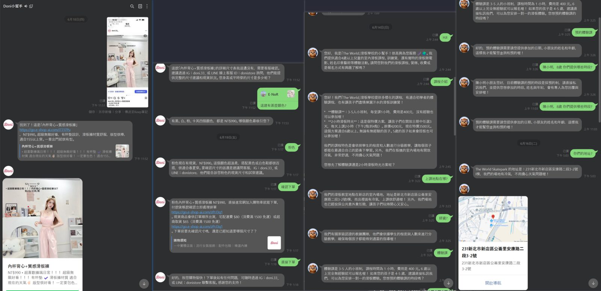

官方 LINE
客服自動回覆
客人在官方 LINE 提問，系統自動聽懂並回覆對應內容，附上連結、圖片、地圖，並能多輪引導下單或預約。這是我們已實際出貨運作的系統。
客人在官方 LINE 提問，系統自動聽懂並回覆對應內容，附上連結、圖片、地圖，並能多輪引導下單或預約。這是我們已實際出貨運作的系統。
客服 AI 回覆 官方 LINE 客戶提問自動回覆
先給您看實證。下圖是我們已經實際出貨、正在運作的官方 LINE 自動客服，兩個不同產業的真實對話：

不是制式的關鍵字罐頭回覆，而是能讀懂客人在問什麼、給出對應的答案：
客人用自己的話問（「有沒有粉色」「體驗課多少錢」），系統理解後回出對應內容，而非要客人背指令。
回覆可帶連結、商品圖片、地址地圖等，讓客人一次拿到所需資訊。
能接續上一句話往下問（例如預約需要日期與姓名），把客人一步步帶到您要的結果（下單、預約、留資料）。
遇到知識庫沒有的問題，系統會請客人稍候或轉由真人接手，而不是硬掰，避免亂回覆傷信任。
系統的答案來自您給的常見問答與資料，您給什麼、它答什麼，內容可控、可隨時更新。
| # | 交付物 | 內容 |
|---|---|---|
| 1 | 官方 LINE 客服 bot | 串接貴公司官方 LINE，客人提問即自動回覆，運作於我們現有的成熟平台 |
| 2 | 問答知識庫建置 | 依貴公司提供的常見問答／產品資訊建立知識庫，作為回答依據，日後可自行增修 |
| 3 | 聽懂問題的回覆能力 | 理解客人口語提問、給出對應答案，支援多輪對話與基本引導（如預約、下單導引） |
| 4 | 答不出來的處理 | 知識庫未涵蓋者，禮貌請客人稍候或轉真人，不亂回覆 |
| 5 | 操作說明 + 一次線上教學 | 如何增修問答內容、查看運作狀況，使同仁得以自行維護 |
以下事項直接影響工作量與回覆準確率，懇請先行確認：
這是系統回答的依據，也是本案最關鍵的素材。可以是一份現有的 FAQ、產品說明、價目表，或您平常回覆客人的範例。內容越完整，上線首日回答得越準。
是商品／價格／庫存（電商型）、課程／預約（服務型），或一般公司資訊？這會決定知識庫怎麼整理。
是否已有 LINE 官方帳號？串接需要該帳號的相關設定權限（上線時我們會協助設定）。
請客人稍候由真人回覆、留下聯絡方式，或給一句固定的引導語？
以下為依需求說明之初步報價區間，正式報價於上述事項確認、看過您的問答素材後出具。
| 階段 | 交付內容 | 占比 |
|---|---|---|
| 第一期：串接與知識庫 | 串接官方 LINE、依您的問答素材建立知識庫、基本自動回覆上線 | 60% |
| 第二期：調校與交付 | 依實際對話微調回答、答不出來的處理、操作說明與一次線上教學 | 40% |
兩種交付方式可選
明確排除（如需，另行報價）
確認需求與取得問答素材後，付訂後 3～5 日內完工。先以您提供的常見問答完成串接與基本回覆、交付可用版本，其後依實際對話微調。
官方 LINE 自動客服我們已實際出貨，跨電商與教學等不同產業都在跑（見第一節實證）。
底層平台與問答檢索是我們現有資產，不必為本案從零建置，成本優勢直接反映在報價。
以您提供的內容為依據回答，遇到不會的會轉真人，避免亂回覆傷害客戶信任。
交付後附操作說明，您可自行增修問答內容；需要時亦可交付原始碼或續約升級。